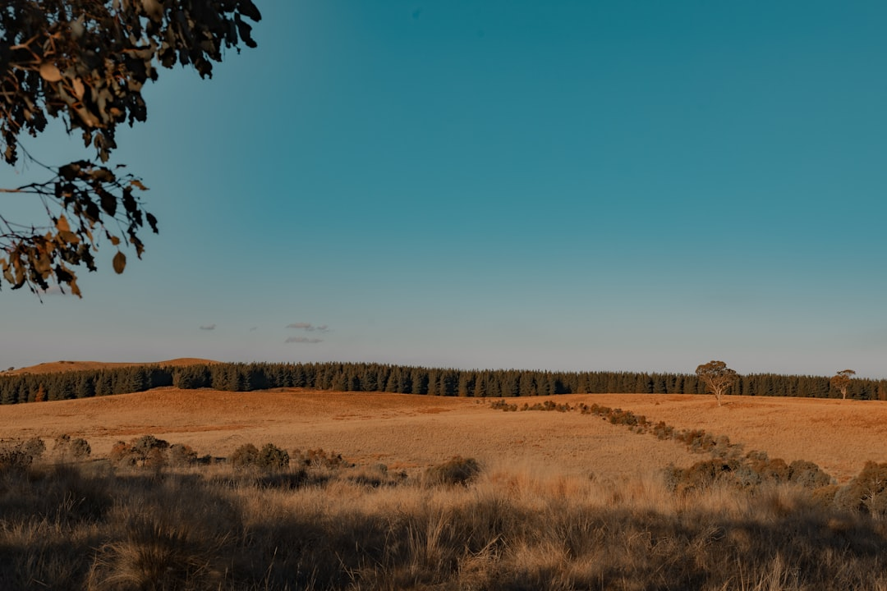

For Canberra tree work, the core decision is not just removal. The supplied guide identifies 6 routes: removal, pruning, stump grinding, arborist assessment, urgent tree work and hedge or smaller-tree trimming. It also says ACT checks come before major work, because public trees are protected and private trees may be protected under the Urban Forest Act 2023. A useful written response needs ownership, access, nearby assets, stump scope and waste details.
For homeowners comparing tree removal canberra options, the useful starting point is the tree's condition, ACT protected-tree status, site access and the written scope needed before anyone quotes.
Tree Removal Canberra Explained
Top Tree Removal Canberra frames removal as one possible route, not the default answer. The published guide says removal may suit a dead, structurally compromised or unsuitable tree, but pruning, deadwooding, assessment, storm-damage triage, stump grinding and hedge maintenance can also be the better first conversation.
The ACT layer changes the order of decisions. The source guide says all public trees are protected and residents must not prune or remove street trees themselves. It also says a private tree may be protected under ACT rules, including by size, registration or other qualifying conditions, and that a dead native tree can still require care in the status check.
Before asking for a quote, separate three questions: who owns or controls the tree, whether protected-tree guidance has been checked, and what outcome is actually needed. That makes the request clearer than a height estimate or a single photo.
Who This Applies To
This guide is for private property owners, tenants preparing information for an owner, strata contacts, and buyers trying to understand a tree issue before settlement or renovation planning. It is also useful where a tree is close to roofs, fences, visible lines, access paths or areas that need stump work after the main tree is handled.
It is not a substitute for the actual provider's qualifications, insurance, availability or site judgement. The source guide is explicit that it does not borrow an operator's licence, insurance, memberships or project history. Those checks belong to the provider being considered.
- Use photos that show the whole tree, trunk and surrounding constraints.
- Note whether the tree appears to be on private land, public land or a boundary area.
- State whether the request is for removal, pruning, assessment, stump grinding, waste removal or a combination.
- Ask for method, approvals, credentials, insurance, inclusions and exclusions in writing.
Removal, Pruning Or Assessment
The practical choice is often between removing a tree, reducing a specific problem through pruning, or asking for an arborist assessment before choosing either. The supplied guide gives pruning a narrower role: selective work for deadwood, clearance or canopy objectives, not indiscriminate lopping.
An assessment becomes more relevant where the question is tree health, risk, protected status or development impact. That is especially important when the desired outcome is not simply a clear space, but a defensible decision about what work is suitable under ACT conditions.
Stump work should be scoped separately. Grinding depth, access, surface roots, grindings and backfill can affect whether the area can be reused afterwards. A quote that treats the stump, logs, mulch and final clean-up as vague extras is harder to compare with another quote.
For a related editorial path through the same local topic, see this Canberra tree removal planning guide.
Site Details That Change The Written Scope
The source page says a useful enquiry is more than tree height. The stronger brief includes suburb, the reason work is being considered, whole-tree and trunk photos, gate or access width, nearby roofs and fences, visible lines, slope and the result wanted.
Access can change the method. A provider needs to know whether branches, timber, tools and stump equipment can move through the available path. Nearby assets also matter because roofs, fences, services and garden areas may need protection or careful sequencing in the written scope.
Waste language should be plain. Ask whether logs are left, removed, chipped or mulched, and whether final clean-up is included. If mulch or grindings are left on site, ask where they will be placed. If the area needs backfill or surface repair, ask whether that is included or excluded.
Public Trees And Urgent Situations
The ACT distinction between private and public trees should be checked before arranging major work. The source guide points readers to City Services tests and ACTmapi for private-tree guidance, and says public-tree issues should be reported rather than handled by residents.
Urgent tree work is framed as triage for fallen or storm-damaged trees, electrical risk and make-safe scope. The page says to keep people clear of an unsafe area and treat overhead or fallen electrical lines as a separate hazard. That supports a narrower first request: describe the hazard, location, access and nearby structures, then let the actual provider confirm whether the work is accepted and when it can be attended.
For tree removal Canberra decisions, the most useful quote comparison is written and like for like. Ask each provider to record method, approvals, credentials, insurance, inclusions, exclusions and site repair before choosing.
- Identify control. Confirm whether the tree is private, public or potentially protected before authorising major work.
- Document the site. Take whole-tree, trunk, access and nearby-asset photos so the first written response has useful context.
- Separate the tasks. List removal, pruning, assessment, stump work, waste and clean-up as separate inclusions or exclusions.
- Compare in writing. Ask providers to state method, approvals, credentials, insurance and site repair before you choose.
| Situation | Likely next question | Scope detail to confirm |
|---|---|---|
| Dead, structurally compromised or unsuitable tree | Is removal allowed and appropriate? | Protected status, rigging access, stump, waste and clean-up |
| Deadwood, clearance or canopy objective | Would selective pruning meet the goal? | Branches targeted, access, debris handling and intended finish |
| Health, risk, protected-tree or development issue | Is an arborist assessment needed first? | Assessment purpose, evidence required and written recommendation |
| Stump remains after tree work | How will the area be reused? | Grinding depth, surface roots, grindings and backfill |
Common questions
Can I decide from tree height alone? No. The source guide says there is no reliable price from height alone. Condition, access, protected status, nearby assets, stump work and waste can all change the written scope.
Are Canberra street trees handled like private trees? No. The supplied guide says all public trees are protected and residents must not prune or remove street trees themselves. Public-tree issues should be reported through the proper ACT pathway.
When is pruning a better first question than removal? Pruning may suit deadwood, clearance or canopy objectives where the tree does not need to be removed. The source guide describes selective pruning and warns against treating removal as automatic.
What should I ask a provider to prove? Ask the actual provider for qualifications, insurance, memberships, availability, approvals, inclusions and exclusions. The guide says those proofs stay provider-level and should not be assumed from an editorial page.
This guide covers ACT tree-work planning, protected-tree checks, written quote scope and provider questions for Canberra property owners.